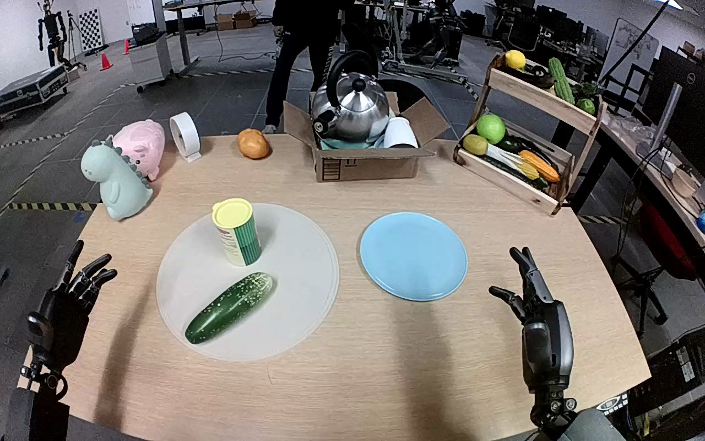

NVIDIA GR1 · 62
Video 62

Visual review action_review.json
{
"prompt_protocol": "humanoid_action_v1",
"prompt_provenance": "visually_authored_from_video_and_initial_frame",
"reviewed_contact_sheets": [
"sheet_001.jpg"
],
"inspected_frame_stride": 2,
"inspected_sampled_frame_count": 60,
"initial_scene": "Egocentric view looking down between both robot forearms at a table. A green white-speckled cucumber lies on a pale circular placemat with an upright cylindrical container; an empty cyan plate is to its right. Both hands are initially open. A person beyond the table does not interact with the manipulation.",
"observed_sequence": [
{
"start_frame": 0,
"end_frame": 10,
"observation": "Both hands open beside the tabletop; cucumber rests on the circular placemat and cyan plate is empty.",
"confidence": "high"
},
{
"start_frame": 11,
"end_frame": 30,
"observation": "Left forearm advances toward cucumber with fingers spread; hand brackets the near end of cucumber while right hand remains open away from it.",
"confidence": "high"
},
{
"start_frame": 31,
"end_frame": 66,
"observation": "Left hand lowers around cucumber and progressively closes opposing thumb/fingers around its near half, establishing a grasp while cucumber remains on placemat.",
"confidence": "high"
},
{
"start_frame": 67,
"end_frame": 80,
"observation": "Left hand lifts cucumber off the placemat; cucumber stays held between fingers and thumb, clear of the mat and container.",
"confidence": "high"
},
{
"start_frame": 81,
"end_frame": 98,
"observation": "Left arm carries held cucumber rightward across the gap toward and above the cyan plate. Right hand remains open and supplies no support.",
"confidence": "high"
},
{
"start_frame": 99,
"end_frame": 110,
"observation": "Left hand lowers cucumber over the cyan plate until it reaches the plate surface; fingers remain curled around it.",
"confidence": "high"
},
{
"start_frame": 111,
"end_frame": 119,
"observation": "Left fingers uncurl and open. Cucumber rolls/pivots from roughly horizontal toward a diagonal orientation within the plate. Final frame shows cucumber lying on plate with opened left fingers above and thumb immediately beside it; hand has not withdrawn.",
"confidence": "high"
}
],
"arm_hand_roles": {
"left": "Only manipulating hand: reaches, grasps cucumber with thumb and fingers, lifts, transports, lowers onto plate, and opens fingers for placement.",
"right": "Remains open off to robot right, with slight posture changes but no contact or stabilizing role.",
"coordination": "Single-handed transfer with left hand; no hand-to-hand exchange or person interaction."
},
"anatomical_side_evidence": "The camera looks forward/down from between the robot arms in an egocentric view. The active forearm enters from the robot left below the camera and its thumb opposes the fingers toward the central tabletop. The other forearm enters on robot right with the complementary hand orientation. These paired arm origins and hand orientations establish robot-relative left/right rather than a frontal-view image-side assumption; shoulder attachment is outside view.",
"evidence_frame_indices": [
0,
24,
66,
80,
104,
114,
118,
119
],
"coverage": "All 60 every-second frames from 0 through 118 visually inspected on sheet_001.jpg; source initial PNG and native transition/final frames 24,66,80,104,114,118,119 inspected at 1280x800.",
"uncertainties": [
"The final left thumb remains immediately beside the cucumber; slight residual thumb contact cannot be excluded. The opened fingers and cucumber resting within the plate are visible, but a subsequent full hand withdrawal is not shown."
],
"annotation_discrepancies": [],
"selected_execution_status": "success",
"outcome": "Cucumber transferred from round placemat to cyan plate, with fingers visibly opened at the end.",
"terminal_state": "Cucumber lies diagonally within the cyan plate after left fingers open. Left hand remains close above/beside the cucumber and the right hand stays open away from the task.",
"video_id": "62",
"dataset": "NVIDIA_GR1_100",
"dedicated_review_agent": "review_gr1_62",
"review_source_video": "NVIDIA_GR1_100/62/original/original.mp4",
"source_frame_count": 120,
"source_fps": 20.0,
"native_detail_frames": [
24,
66,
80,
104,
114,
118,
119
],
"world_model_prompt": "The robot grasps the green cucumber on the round placemat with its left hand, lifts it clear, and carries it across to the cyan plate. It lowers the cucumber onto the plate and opens its fingers, leaving the cucumber lying diagonally on the plate with the left hand still beside it. Keep the camera fixed; preserve robot geometry, physically valid joint motion, and normal gripper opening and closing.",
"original_task_instruction": "Use the left hand to pick up green cucumber from from the beige place mat to to the small cyan plate.",
"selected_segment": {
"start_frame": 0,
"end_frame_exclusive": 120,
"reason": "Complete original single-task reference; no cropping or trimming requested."
},
"source_video_sha256": "dff85e0b641369384dd167c169ca3cbb41b17993b7b9896297e028968f2a8b1a",
"review_completed_at": "2026-10-13T18:22:19.917412+00:00"
}